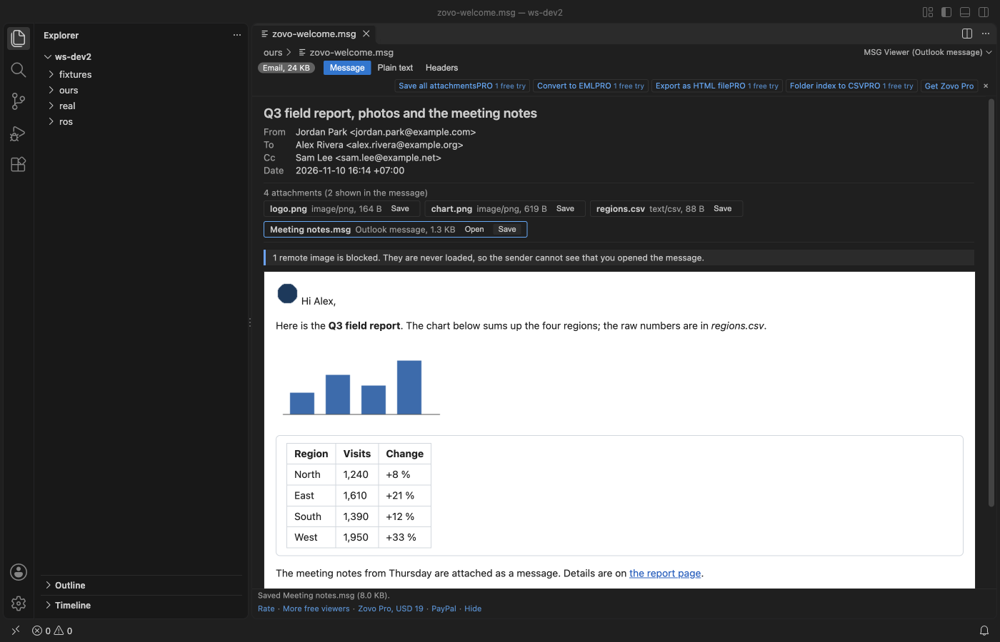

MSG Viewer
MSG Viewer for Outlook Email, a VS Code extension by Zovo
Open Outlook .msg files in VS Code and read them: the sender, the recipients, the date, the body and the attachments, with scripts and remote images blocked. Made by Zovo.
Free, MIT license. Needs VS Code 1.75.0 or newer. Extension ID zovo.zovo-msg-viewer, version 0.1.1.

Free, with no account and no network calls:
- Opens Outlook .msg files (and .oft templates) read-only: Subject, From, To, Cc, Bcc, the sent and received dates, and every header line in the Headers view.
- Shows the body as HTML after a strict clean-up: scripts, event handlers, frames and forms are removed, and remote images are never loaded (the viewer tells you how many it blocked). Pictures that are part of the message show in place.
- Reads the body that Outlook keeps as compressed RTF, including HTML mail stored inside RTF. The Plain text view shows the text body.
- Lists the attachments with their type and size. Save writes one attachment where you choose. An attached message (a forwarded .msg) opens inside the viewer with Open, and Back returns to the outer message.
- ROS message definitions are also named .msg, but they are text: they open in the normal text editor as before.
Zovo Pro: USD 19 once, for the Pro tools in every Zovo extension. Each Pro tool has 1 free try on your computer first:
- Save all attachments: every attachment of the message in one step, in a new folder beside the .msg file. Attached messages are saved as .msg files, with their own attachments in a folder beside them.
- Convert to EML: the message as a standard .eml file (RFC 5322 MIME) with the text and HTML body, inline pictures, attachments and attached messages, so any mail app opens it.
- Export as HTML file: one standalone HTML page with the header, the attachment list and the cleaned body with its pictures. It has no scripts and loads nothing from the internet.
- Folder index to CSV: every .msg file in a folder and its subfolders in one CSV file with the file, date, from, to, cc, subject and the attachment names.
Questions people ask
Is MSG Viewer free?
Yes. MSG Viewer is free and MIT licensed.
How do I install MSG Viewer?
Click "Install in VS Code" above, or search for zovo.zovo-msg-viewer in the Extensions view.
How to use it
- Click a .msg file in the Explorer. It opens in the viewer. To try it without your own mail, run MSG Viewer: Open the Sample Message from the Command Palette.
- Message, Plain text and Headers in the toolbar switch the view. A link in the message opens nothing: a click shows its address at the bottom with a Copy link button.
- In the attachment list, Save writes one file, and Open shows an attached message. The path at the top shows where you are; Back goes up one level.
- The Pro tools are in the Command Palette (MSG Viewer: ... (Pro)), in the Explorer right-click menu of .msg files and folders, in the viewer's title bar menu and in the small row at the end of the viewer toolbar. The row closes with its x for the rest of the session, and the setting
msgViewer.showProToolshides the Pro tools for good.
What it reads
Outlook saves a message as a compound file (the same container as old Office files). The viewer reads it with code written for this extension: the message properties, the recipients, the attachments, attached messages (also messages attached inside them), and the body as HTML, as HTML inside compressed RTF, or as plain text. Text in older 8-bit code pages (for example Cyrillic or Central European) is decoded with the message's own code page.
A damaged or cut-off file gets a short note that says what is wrong, and nothing else breaks. A compound file that is not a message (for example an old .doc renamed to .msg) gets a note too.
Privacy
The extension reads the file you open and nothing else. It makes no network calls, and nothing is uploaded or measured. The message body is shown in a sandboxed frame where no script can run, under a policy that blocks every remote load, so the sender cannot see that you opened the message. The .msg file is never changed, and the Pro tools write only the files you ask for. The links at the bottom of the viewer (Rate, More free viewers, Zovo Pro, PayPal) open a page only when you click them, and the setting msgViewer.showSupportLinks hides them.
Settings
| Setting | Default | What it does |
|---|---|---|
msgViewer.showProTools | true | Shows the Pro tools in menus, the palette and the toolbar row. |
msgViewer.showSupportLinks | true | Shows the Rate, More free viewers, Zovo Pro and PayPal links. |
msgViewer.askForRating | true | Asks once for a rating after two good uses at least 30 minutes apart. |
zovo.msg.trial.enabled | true | Shows the 7-day trial button in the Zovo Pro panel. |
Zovo Pro
One payment of USD 19 unlocks the Pro tools in every Zovo extension on your computers; a team of 5 is USD 59. The key works offline. Run Zovo Pro: Get Zovo Pro from the Command Palette. The Zovo Pro tab lists this extension's Pro tools and your free tries before any payment page opens.
When a Pro tool has no free try left, its click opens the Zovo Pro panel. If you have not had a trial yet, the first button there starts a 7-day trial of all Pro tools in this extension, free and with no card. Nothing else shows a message about Pro.
Install MSG Viewer
Click the button to open VS Code and install it, or press Ctrl+P (Cmd+P on macOS) in VS Code and run ext install zovo.zovo-msg-viewer.
Free, MIT license. Needs VS Code 1.75.0 or newer. Extension ID zovo.zovo-msg-viewer, version 0.1.1.
Source code and issues are on GitHub.
Zovo Pro and support
Zovo Pro: USD 19 once, every Zovo viewer. It turns on the Pro tools in this extension and in the other Zovo extensions you use. The free features stay free.
After a card payment your license key shows on the next page. Paste it with the command "Zovo Pro: Enter a key".
You can also support the work with no Pro:
Need your format supported?
Open a format request with a sample file, and I reply there whether it can be done. For USD 299 once, through this GitHub Sponsors tier, I add your file format or a missing feature to this extension, with tests, within 7 days.